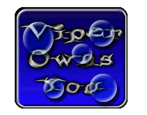

Viper Owns This "secure" site :P

Hey, GREAT security for a Mall security site...
Shouts to: Stealth, F00y, ChronoZ, PiCo, Surf, Yello, LUV, BinaryZer0, Nuke, a-m-b-e-r, Maleknia, and the rest of the people from our room...
Anna, I love you :)
No animals or people were harmed in this hack. :)
Viper™ 1999
e-mail this guy and tell him that he's owned! ;x
Message to the Webmaster: I advise you to secure your site before someone actually deletes something. To restore the normal settings, the original index page is index.bak. :)